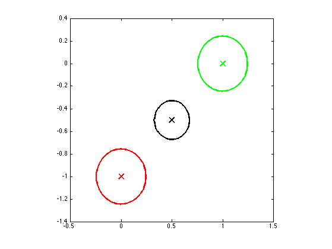
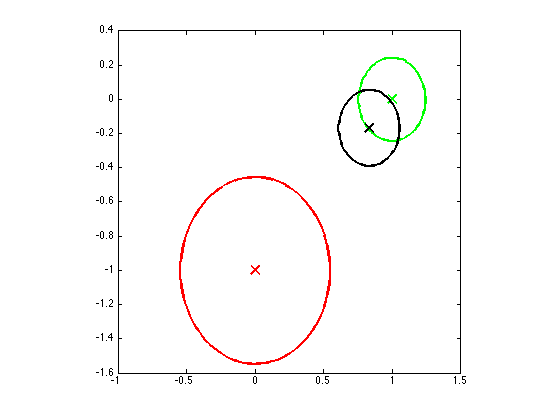
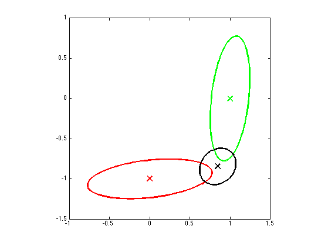

Sensor Fusion Demo 2D
function sensorFusion2d()
Sigmas = {0.01*eye(2), 0.01*eye(2)};
helper(Sigmas)
printPmtkFigure('demoGaussBayes2dEqualSpherical')
Sigmas = {0.05*eye(2), 0.01*eye(2)};
helper(Sigmas)
printPmtkFigure('demoGaussBayes2dUnequalSpherical')
Sigmas = {0.01*[10 1; 1 1], 0.01*[1 1; 1 10]};
helper(Sigmas)
printPmtkFigure('demoGaussBayes2dUnequal')
end
function helper(Sigmas)
y1 = [0 -1]';
y2 = [1 0]';
y = [y1(:); y2(:)];
prior.mu = [0 0]'; prior.Sigma = 1e10*eye(2);
A = repmat(eye(2), 2, 1);
py.mu = zeros(4,1); py.Sigma = blkdiag(Sigmas{1}, Sigmas{2});
post = gaussSoftCondition(prior, py, A, y);
figure;
gaussPlot2d(y1, Sigmas{1}, 'color', 'r');
hold on
grid off;
gaussPlot2d(y2, Sigmas{2}, 'color', 'g');
gaussPlot2d(post.mu, post.Sigma, 'color', 'k');
axis square
end
  